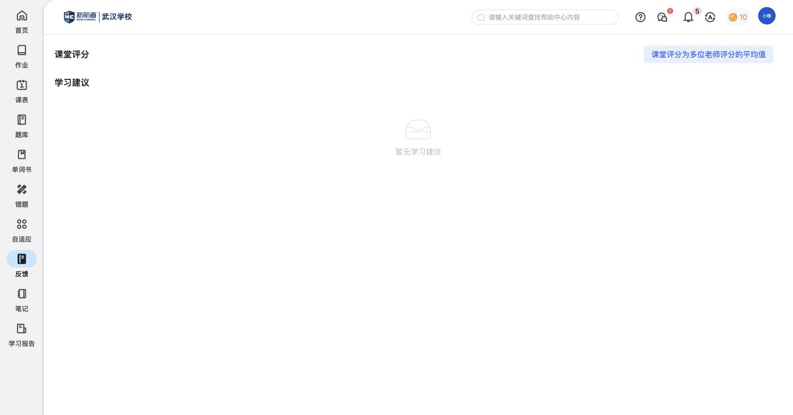

反馈：查看课堂评价和学习建议
反馈集中展示课堂评分和学习建议，帮助学生了解课堂学习表现。它面向课程教学，与某一份作业下的老师评语分别呈现。
功能定位与页面结构
反馈
课堂评分集中展示课堂表现评价；页面说明采用多位老师评分的平均值。
学习建议查看课堂相关建议；现有账号暂无建议正文。
核心功能清单
| 功能 | 实际用途 | 对比关注点 |
|---|---|---|
| 课堂反馈 | 查看老师对课堂表现的评价，以及后续学习建议。 | 课堂表现是否有面向学生的评价和建议入口，并与作业反馈分清用途。 |
课堂反馈
查看老师对课堂表现的评价，以及后续学习建议。
- 页面将“课堂评分”和“学习建议”放在一起。
- 评分旁注明“课堂评分为多位老师评分的平均值”。

对比时可关注：课堂表现是否有面向学生的评价和建议入口，并与作业反馈分清用途。
当前没有有效评分和建议正文，尚不能描述评分维度、历史详情或学生回复。
与其他模块的关联
- “反馈”看课堂评价；“作业→评语”看某一次作业的反馈；学习报告则回顾一个阶段的情况。
- 教师发布课堂反馈后，学生看到什么、何时更新，统一引用独立联动说明中的待确认关系。
待补内容
- 有内容的课堂反馈样例，补充评分维度、建议正文和是否保留历史。
- 课堂反馈发布后的展示和更新方式，统一在独立联动说明中维护。
操作依据
保留1组截图与完整页面观察，基础操作不单列为核心功能。